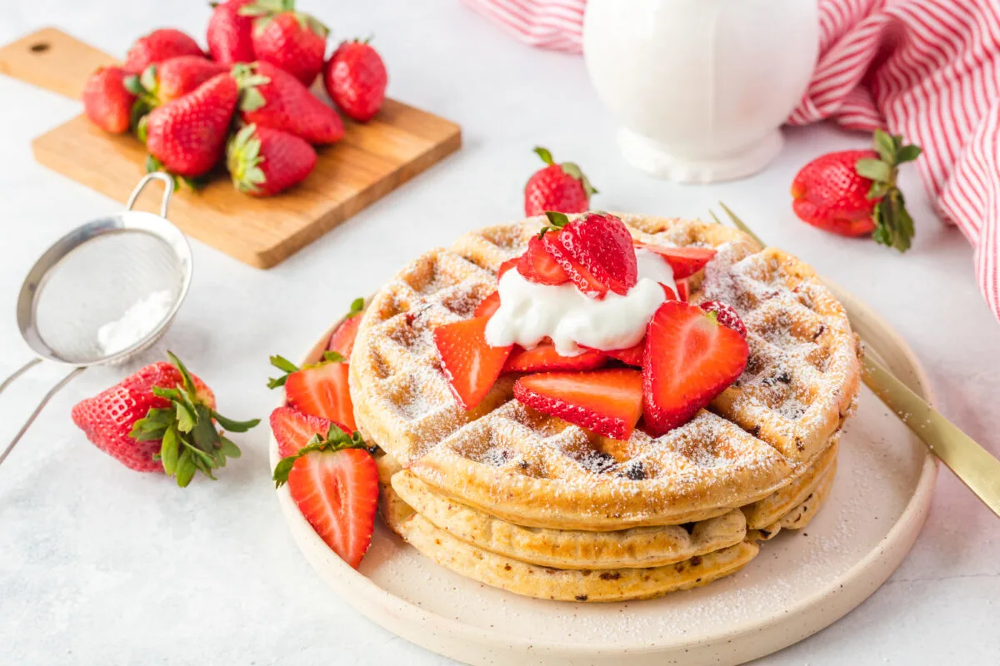

Today's Featured Recipe

Strawberry Waffle
20 Minutes
.png) 5 Ingredients
4-6 Serving
5 Ingredients
4-6 Serving
There's no better way to celebrate May being National Strawberry Month than by sharing a sweet treat with your pup!! Strawberries...